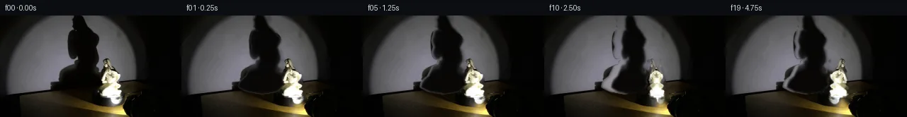

![首帧]()

Round 00
2026-11-05T00:58:00.461219+00:00像素候选变化代码 +286/−0inspection 更新
pixels a82a6cf307aa9bdf · code 41e8917f0c09c282
查看本轮 generate.py 真实 diff
--- previous/generate.py +++ current/generate.py @@ -0,0 +1,286 @@ +#!/usr/bin/env python3 +"""Generate a 20-frame, image-based clockwise statue/platform rotation. + +Only first_frame.png is used as visual source. The single supplied view is +decomposed into a fixed plate, a porcelain cutout, and a soft wall-shadow +matte. Conservative warps and local relighting supply the changing view. +""" + +from pathlib import Path +import math + +import cv2 +import numpy as np +from PIL import Image, ImageDraw, ImageFont + +from artifact_io import save + + +ROOT = Path(__file__).resolve().parent +H, W = 144, 256 + + +def smoothstep(v: float) -> float: + v = max(0.0, min(1.0, v)) + return v * v * (3.0 - 2.0 * v) + + +def fit_wall_plate(src: np.ndarray): + """Estimate the unoccluded spotlight wall and its initial shadow matte.""" + yy, xx = np.mgrid[:H, :W] + lum = cv2.cvtColor(src, cv2.COLOR_RGB2GRAY).astype(np.float32) + + # Hand-measured outline of the supplied wall shadow. It deliberately + # stays off the porcelain and the platform/lamp. + poly = np.array([ + [101, 0], [128, 0], [132, 10], [137, 18], [134, 27], [143, 35], + [141, 51], [146, 63], [143, 77], [148, 90], [143, 101], [133, 108], + [113, 111], [91, 107], [80, 101], [82, 92], [91, 85], [96, 75], + [98, 64], [96, 53], [99, 44], [96, 35], [99, 25], [98, 15] + ], np.int32) + region = np.zeros((H, W), np.uint8) + cv2.fillPoly(region, [poly], 255) + + # Degree-four surface captures the large, fixed, soft spotlight pool. + xn = (xx - 106.0) / 100.0 + yn = (yy - 58.0) / 80.0 + feats = [] + for degree in range(5): + for i in range(degree + 1): + feats.append((xn ** i) * (yn ** (degree - i))) + Aall = np.stack(feats, axis=-1) + ellipse = ((xx - 106.0) / 101.0) ** 2 + ((yy - 59.0) / 82.0) ** 2 < 1.18 + sample = ellipse & (yy < 110) & (region == 0) & (lum > 28) + A = Aall[sample] + plate = np.empty_like(src, dtype=np.float32) + for c in range(3): + b = src[..., c].astype(np.float32)[sample] + keep = np.ones(len(b), bool) + coef = np.zeros(A.shape[1], np.float64) + for _ in range(4): + coef, *_ = np.linalg.lstsq(A[keep], b[keep], rcond=None) + resid = np.abs(A @ coef - b) + cutoff = np.percentile(resid[keep], 86) + keep = resid < max(5.0, cutoff) + plate[..., c] = np.clip(Aall @ coef, 0, 255) + + # Preserve a trace of wall grain rather than creating a featureless patch. + residual = src.astype(np.float32) - cv2.GaussianBlur(src, (0, 0), 3.0) + plate += cv2.GaussianBlur(residual, (0, 0), 0.7) * 0.22 + plate = np.clip(plate, 0, 255) + + # Opacity against a very dark, warm shadow color. Use only pixels darker + # than the fitted wall so pale polynomial errors do not become shadow. + pl = cv2.cvtColor(plate.astype(np.uint8), cv2.COLOR_RGB2GRAY).astype(np.float32) + alpha = np.clip((pl - lum) / np.maximum(pl - 2.0, 18.0), 0.0, 0.97) + alpha *= region.astype(np.float32) / 255.0 + alpha = cv2.GaussianBlur(alpha, (0, 0), 1.15) + alpha[alpha < 0.035] = 0 + + # A fully clean wall is needed under each new shadow position. + fill = cv2.GaussianBlur((region > 0).astype(np.float32), (0, 0), 2.2) + fill *= np.clip(alpha * 1.8, 0.0, 1.0) + clean = src.astype(np.float32) * (1 - fill[..., None]) + plate * fill[..., None] + return clean, alpha + + +def extract_statue(src: np.ndarray): … diff truncated; 199 more lines …